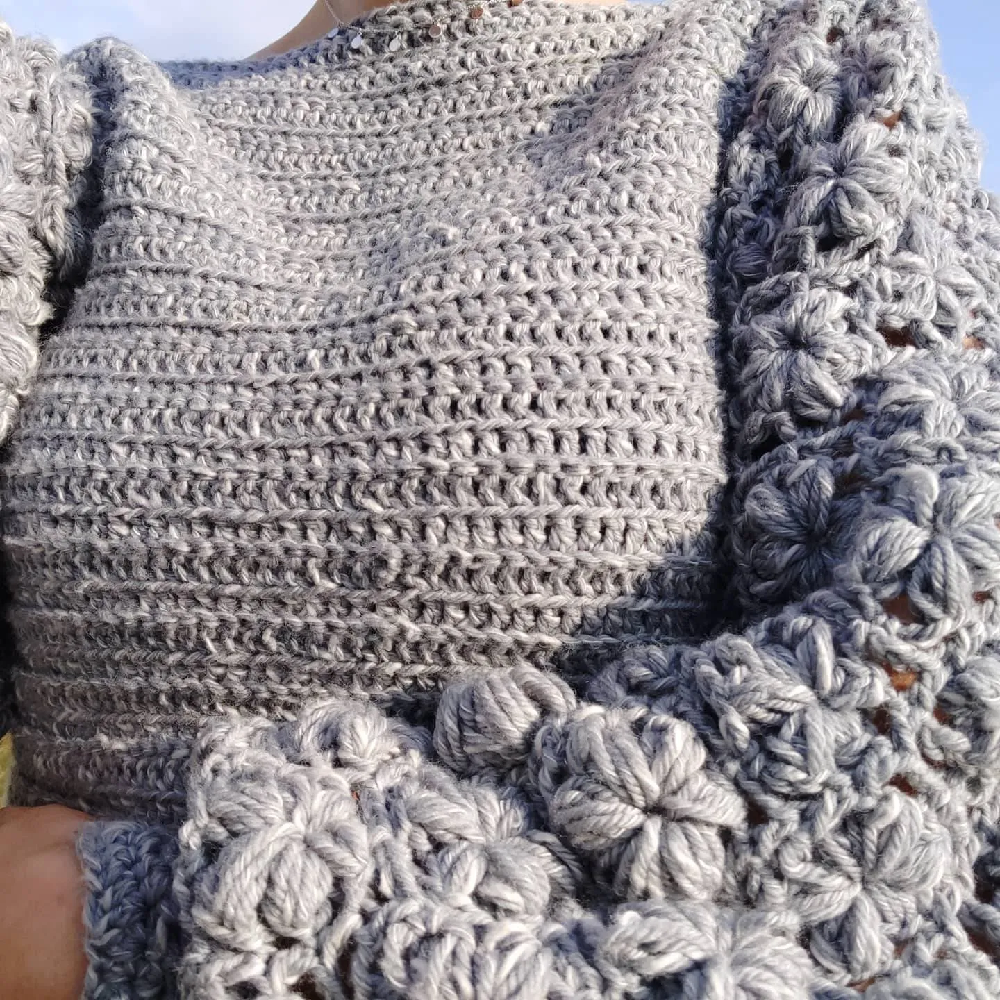

Hallo! Mijn naam is Kirsten Kingma en sinds december 2020 haak ik er op los. <\br> Hieronder kun je een aantal dingen zien die ik gemaakt heb. Graag haak ik ook iets voor jou! Je kunt mij altijd een email of berichtje sturen met de vraag of ik iets voor je kan maken. Kijk op mijn Etsy voor patronen die ik heb geschreven zodat je zelf ook aan de slag kunt!